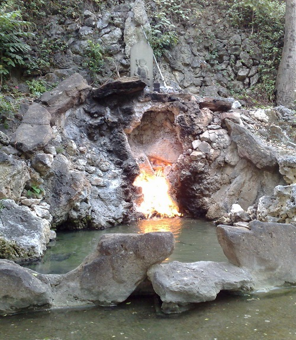
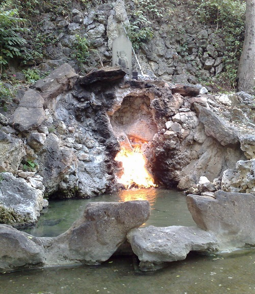

Natural Landscapes
Mountains | Rivers | Beaches | Ecology | Geothermal | Landform
Natural Landscapes
Mountains | Rivers | Beaches | Ecology | Geothermal | Landform
Yangmingshan National Park
Tatun Volcano Group | Flora
Beitou
Geothermal
Yehliu
Geopark
Shimen Reservior
Lotung
Flora
Pingxi
Shifen Waterfall

Sanyi
Tung Blossoms
Wuling Farm
Flora | Formosan landlocked salmon
Aowanda
Maple | Taiwan blue magpie
Cingjing Farm
Green Grean Grasslands
Lotus Forest
Sun Moon Lake
 

Gukeng Green Tunnel
Alishan
Sunrises | Forest | Sea of Clouds
Guanziling
Hot springs
Meinung
Sunflower | Cosmos
Moon World
Badland | Mud volcano
Hsitzuwan
Beaches | Sunsets

Chijing
Beaches
Kenting
Beaches
Chihsingtan
Beaches


Chingsuei Cliff
Hsiuguluan River
Chishang
Dapo Pond | Rice fields


Taroko National Park
Taroko Gorges | Baiyang Waterfall | Hehuanshan
Taimali
Jean-Zen mountain | Kimlun Hot Springs